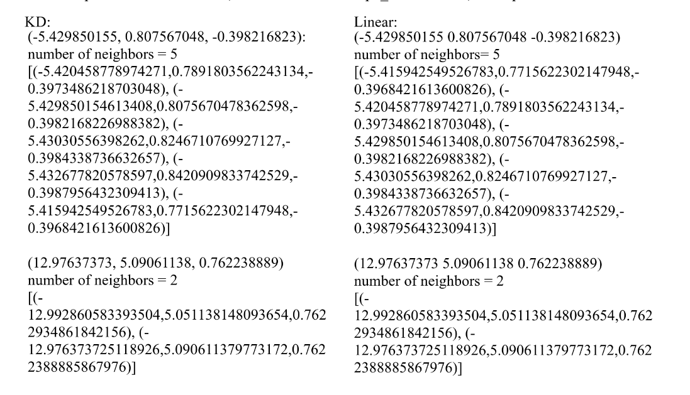

My Projects
Here is a link to this project on datastructures: Datastructures Project
Introduction
This programming assignment continues the previous one by clustering points in 3D space. We use custom data structures to cluster points based on their distance and the required number of points for a cluster. The first assignment employed a linear stack algorithm, while the second aims to enhance runtime using a KD tree, targeting O(log(n)) time instead of the previous O(n). The assignment report compares a KD and Linear implementation, with the raw data shown below:
